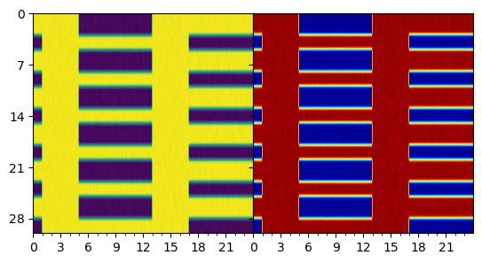

slam_shift = Light.SlamShift()
ts = np.arange(0, 20*24.0, 0.10)
light_values = slam_shift(ts)
act = Actogram(ts, light_vals=light_values, smooth=False)
spm = Hannay19()
trajectory = spm(ts, light_values, np.array([1.0, np.pi, 0.0]))
dlmo = spm.dlmos(trajectory=trajectory)
act.plot_phasemarker(dlmo, color='blue')
plt.show()Plots
Defines some circadian data science plots, like actograms
Actograms
Actograms help display periodic trends in data.
Note
I prefer my actograms to show low values as black and high values as white. The convention in circadian science (for some reason) is the reverse. This can easily be switched in plot calls if you want to do things the wrong way.
Actogram
Actogram (time_total:numpy.ndarray, light_vals:numpy.ndarray, second_zeit:numpy.ndarray=None, ax=None, threshold=10.0, threshold2=None, opacity:float=1.0, color:str='black', smooth=True, sigma=[2.0, 2.0], *args, **kwargs)
Create an Actogram visualisation of the data
| Type | Default | Details | |
|---|---|---|---|
| time_total | ndarray | time in hours | |
| light_vals | ndarray | light values or proxy should be the same length as time_total | |
| second_zeit | ndarray | None | optional second zeitgeber to show on the right side |
| ax | NoneType | None | Axis to plot on, if None a new figure is created |
| threshold | float | 10.0 | threshold for light on/off |
| threshold2 | NoneType | None | threshold for light on/off for second zeitgeber |
| opacity | float | 1.0 | opacity of the light on/off rectangles |
| color | str | black | color of the light on/off rectangles, for the below threshold values |
| smooth | bool | True | whether to apply a gaussian filter to the light values to smooth it, useful for wearable data |
| sigma | list | [2.0, 2.0] | sigma for the gaussian filter |
| args | |||
| kwargs |
plot_mae
plot_mae (dlmo_actual:numpy.ndarray, dlmo_pred:numpy.ndarray, norm_to:float=None, ax=None, *args, **kwargs)
| Type | Default | Details | |
|---|---|---|---|
| dlmo_actual | ndarray | expected to be in hours | |
| dlmo_pred | ndarray | predicted to be in hours | |
| norm_to | float | None | |
| ax | NoneType | None | |
| args | |||
| kwargs |
dlmo_experimental = np.linspace(-12, 12., 30)
dlmo_predicted = dlmo_experimental + np.random.normal(0, 2, len(dlmo_experimental))
plot_mae(dlmo_experimental, dlmo_predicted)The MAE is: 2.641398741517547
Within one hour 11/30
[-21.01173639 -0.12531967 1.40312246 -2.31314249 20.38979752
0.56289487 -3.49731123 0.98514845 -0.91249928 -0.89321195
-2.13931562 0.1464234 -0.6518082 1.7019575 1.80022305
1.42892014 -1.51779066 1.4803608 -1.72819525 -3.36460062
-0.04373978 -1.62496309 -0.37156094 -1.81570189 -0.10431195
-0.83907585 -1.61293433 -1.54634351 -1.67393395 -1.55561742]
plot_torus
plot_torus (phase1:numpy.ndarray, phase2:numpy.ndarray, scaled_by:float=None, ax=None, *args, **kwargs)
| Type | Default | Details | |
|---|---|---|---|
| phase1 | ndarray | array of phases | |
| phase2 | ndarray | array of phases, assumed to be the same length as phase1 | |
| scaled_by | float | None | should the phases be wrapped, this just applies an fmod to the phases |
| ax | NoneType | None | axis to plot on, if None, a new figure is created |
| args | |||
| kwargs | |||
| Returns | Axes | passed to the scatter plot passed to the scatter plot |
Here is an example of the torus plot, which allows one to visualize the relationsjip between two phases.
phi1 = 12.0 + 5.0*np.random.randn(100)
phi2 = phi1 + 5.0*np.random.randn(100)
plot_torus(phi1, phi2, scaled_by=24.0, color='darkgreen')
plt.title("Example torus plot")
plt.xlabel("$\phi_1$")
plt.ylabel("$\phi_2$");Example of an actogram
Stroboscopic
Stroboscopic (ax:matplotlib.axes._axes.Axes, ts:numpy.ndarray, amplitude:numpy.ndarray, phase:numpy.ndarray, period:float=24.0, *args:tuple, **kwargs:dict)
This class can be used to make a stroboscopic plot of the entrainment of an oscillator to a sudden shift in schedule
| Type | Default | Details | |
|---|---|---|---|
| ax | Axes | The axes to plot on | |
| ts | ndarray | The time series of the model | |
| amplitude | ndarray | The amplitude of the model, assumed to be the same length as ts | |
| phase | ndarray | The phase of the model, assumed to be the same length as ts | |
| period | float | 24.0 | The time period between stroboscopic arrows |
| args | tuple | ||
| kwargs | dict |
This is how you can visualize entrainment using a Stroboscopic plot of a trajectory
slam_shift = Light.SlamShift(shift=12.0, lux = 500.0, before_days = 2, after_days=30)
ts = np.arange(0.0, 15*24.0, 0.10)
light_values = slam_shift(ts)
# Run this for a range of period parameters
batch_dim = 50
hmodel = Hannay19({ 'tau': np.linspace(23.5,24.5,batch_dim) })
initial_state = np.array([1.0, np.pi, 0.0]) + np.zeros((batch_dim, 3))
trajectory = hmodel(ts=ts, light_est=light_values, state=initial_state)
ax = plt.gca()
cmap = plt.get_cmap('jet')
for idx in range(trajectory.batch_size):
Stroboscopic(ax,
ts,
trajectory.states[idx, 0, :],
trajectory.states[idx, 1, :],
period=24.0,
lw=0.50,
color=cmap(idx/batch_dim));
plt.title("Stroboscopic plot of the Hannay et al. 2019 model");plot_actogram
plot_actogram (ax:matplotlib.axes._axes.Axes, zeitgeber:numpy.ndarray, num_day:int=240, cmap:matplotlib.colors.Colormap=<matplotl ib.colors.LinearSegmentedColormap object at 0x7f1a39fb26d0>, label_days:int=7, *args, **kwargs)
Make an actogram plot with color
| Type | Default | Details | |
|---|---|---|---|
| ax | Axes | plot axes | |
| zeitgeber | ndarray | the zeitgeber to display | |
| num_day | int | 240 | number of points per day |
| cmap | Colormap | <matplotlib.colors.LinearSegmentedColormap object at 0x7f1a39fb26d0> | the colormap to use |
| label_days | int | 7 | the number of days between labels |
| args | |||
| kwargs | |||
| Returns | Axes | passed to imshow passed to imshow |
slam_shift = Light.ShiftWorkLight()
ts = np.arange(0, 30*24.0, 0.10)
light_values = slam_shift(ts, repeat_period=24.0*5) + np.random.randn(len(ts)) * 1.0
fig, ax = plt.subplots(1,2, sharey='row')
act = plot_actogram(ax[0], zeitgeber=light_values, cmap='viridis')
act = plot_actogram(ax[1], zeitgeber=light_values)
fig.subplots_adjust(wspace=0, hspace=0)
plot_phasetimes
plot_phasetimes (ax:matplotlib.axes._axes.Axes, times:numpy.ndarray, phases:numpy.ndarray, error:numpy.ndarray=None, alpha_error=0.3, alpha=1.0, *args, **kwargs)
This method takes observations of the phase and times (same length arrays) and adds them to the actogram.
plot_phasetimes(self, times: np.ndarray, phases: np.ndarray, *args, **kwargs)
# import circadian
# from circadian.readers import read_standard_json
# cpath = circadian.__path__[0]
# wdata = read_standard_json(cpath + '/sample_data/sample_data.json')
# fig, ax = plt.subplots(1,1, sharey='row')
# plot_actogram(ax, zeitgeber=np.log(wdata.steps+1.0), cmap='jet', label_days=21)
# ax.set_ylabel('Days')
# ax.set_xlabel("ZT");
# -6.0 is to shift the time to the correct timezone from the UTC timezone of the data